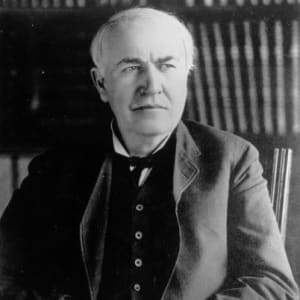
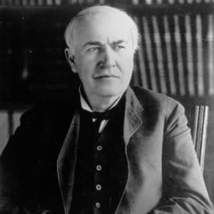
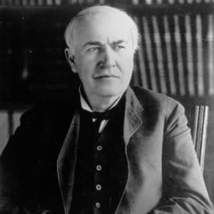
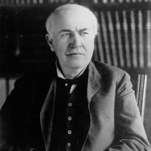

Edison's 1,093 U.S. Patents and 2,332 patents worldwide are responsible for every item that uses electricity as well as the concrete in commercial buildings. He created the motion picture industry, the recording industry, the X-ray machine, and he even created the tattoo pen. More importantly he is the father of modern corporate research & development. While many mistakenly think Edison was a better inventor than businessman, he created companies, was a marketing genius, amassed $200 million in wealth (today's dollars) and changed the world. His recently restored factory of invention is a national park, which can still be seen today in Orange, New Jersey. I assure you it is worth the trip. According to the Edison Innovation Foundation, he operated on four simple principles, taught to him by his loving mother: 1. Never get discouraged if you fail. Learn from it. Keep trying. 2. Learn with both your head and hands. 3. Not everything of value in life comes from books- experience the world. 4. Never stop learning. Read the entire panorama of literature. To celebrate Edison's 168th birthday today, here are some of my favorite and most inspirational Edison quotes. I hope they inspire you to greatness.